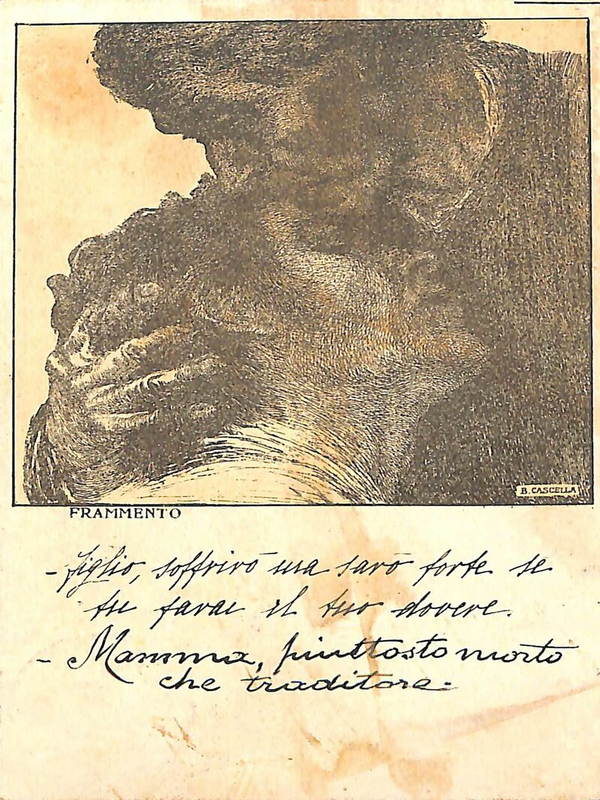

Frammento

×
×
Autore: B. Cascella
Titolo: Frammento
Tipo: Cartolina Artistica
Stato: Buono
Codice: 7694_074_001/002
Mittente: Giovanni Coliola
Destinatario:
Oliva
Turtura
Luogo di Destinazione: Ravenna
Anno: 1918/06/11